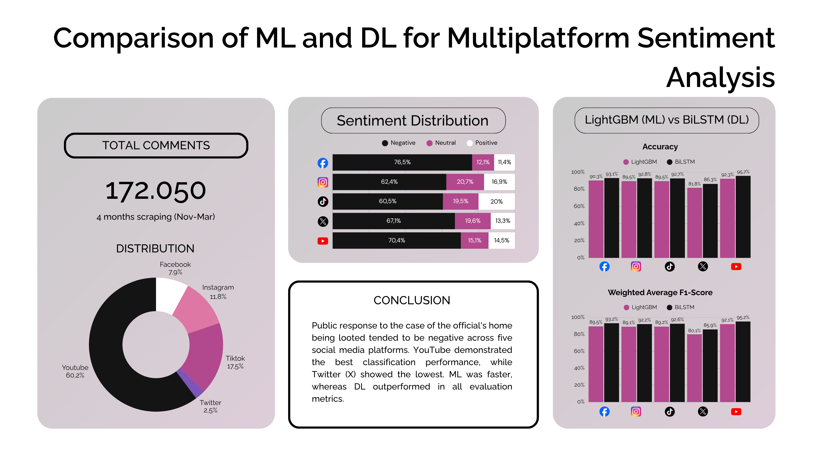
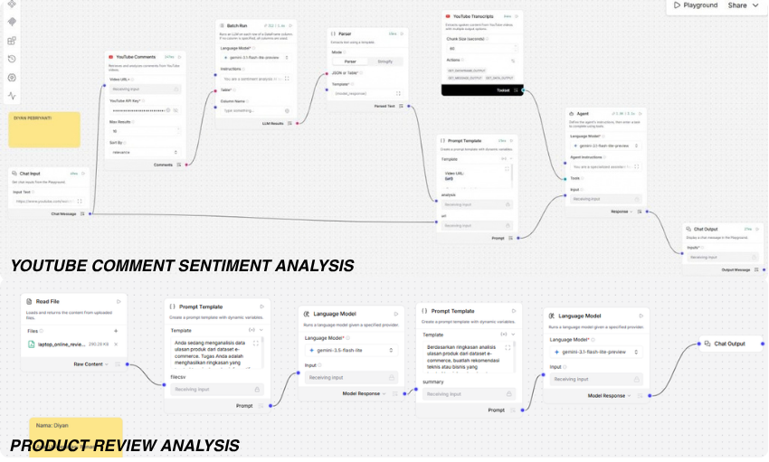
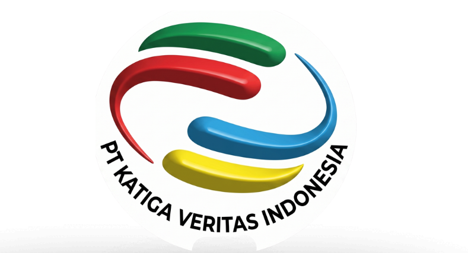

Multiplatform Sentiment Analysis
Comparative sentiment analysis on 172,000+ comments across Facebook, Instagram, TikTok, X, and YouTube with 95.2% accuracy.

Develop an AI Agent using Langflow
Automated AI agent parsing customer feedback CSV datasets to classify sentiments, extract core themes, and generate executive summaries.

Occupational Health and Safety (OHS) Information System
Web-based K3 service platform for PT. Katiga Veritas Indonesia featuring online certificate validation, training management, and audit flows.

Dashboard Employee Training Progress Monitoring
Consolidated thousands of training logs across internal divisions into an interactive Power BI dashboard tracking completion metrics.
Multifile Procurement Data Integration and Automation
Automated Python data pipeline matching and integrating multi-spreadsheet procurement data, reducing processing time to under 1 hour.
E-Commerce Maison Sono Perfume
Full lifecycle e-commerce solution starting from requirement analysis and user workflows to backend APIs, UI wireframes, and database modeling.